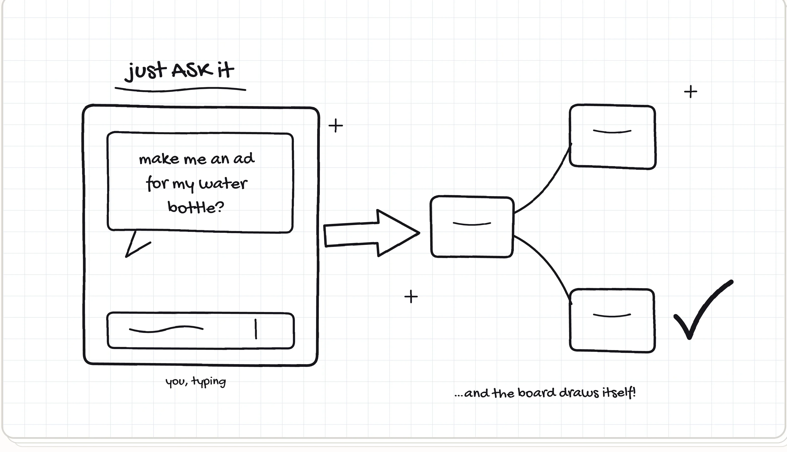
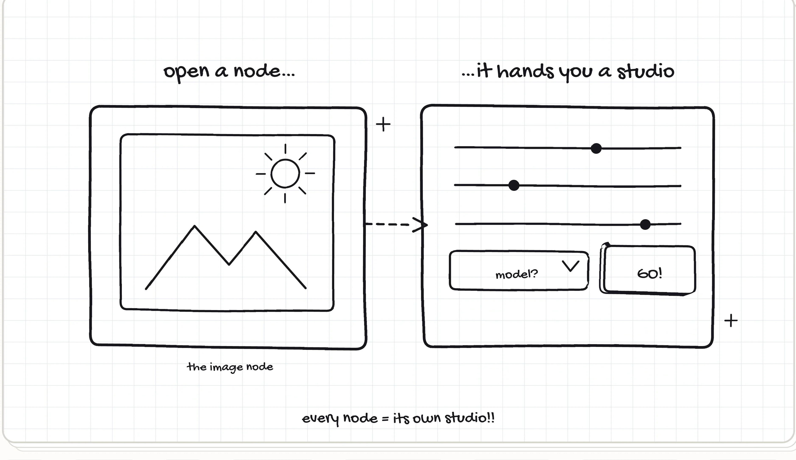
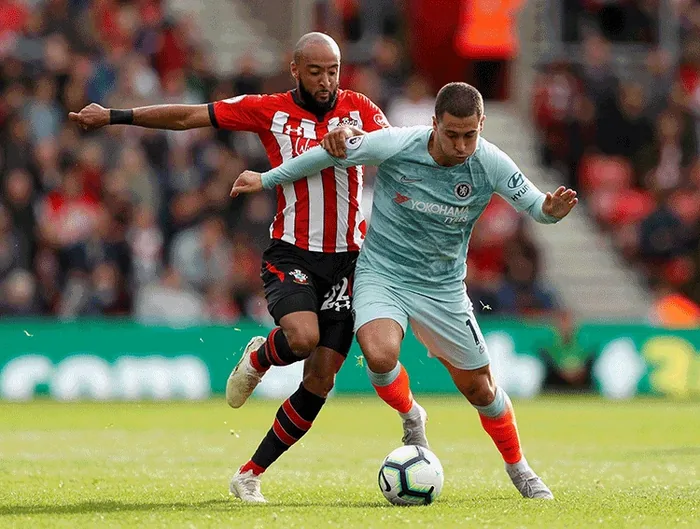
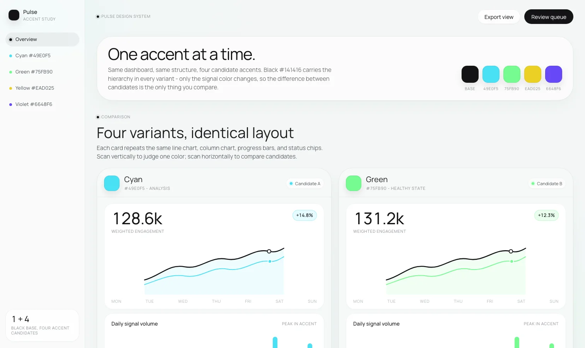
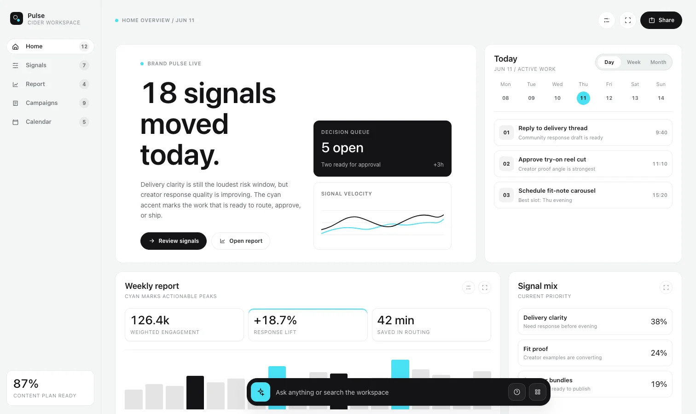
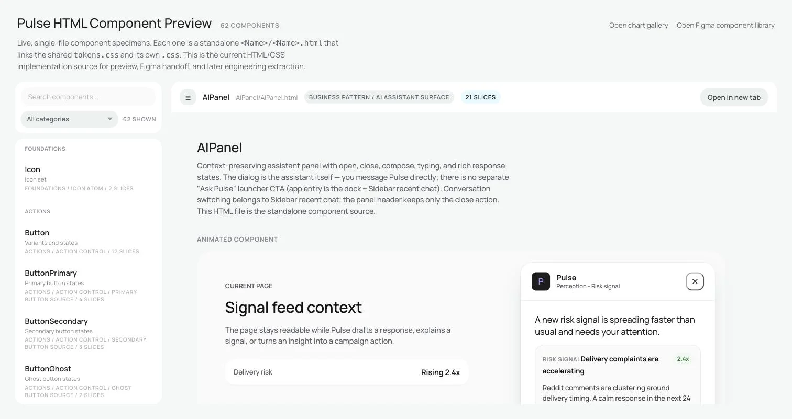
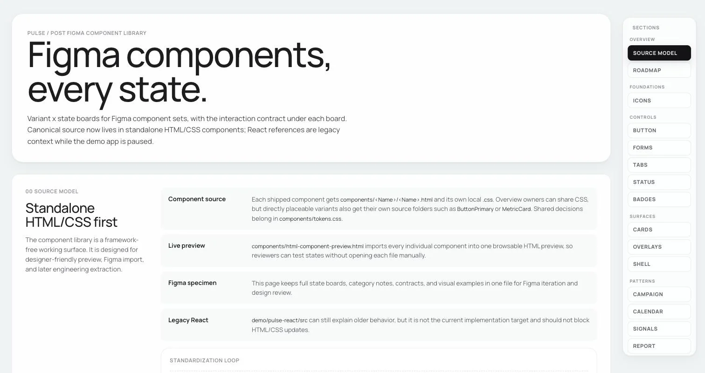

Vicino AI
a canvas built from the ground up
- role
- UX Engineer Intern
- when
- Jun – Aug 2026
Overview
Vicino AI turns a marketing brief into a workflow you can see: an infinite canvas where every node is a generation step, an image, a video, a 3D model.
I helped build Canvas from the ground up, with the design system behind Pulse and the guide that teaches AI to design inside it.
- role
- UX Engineer Intern
- when
- Jun – Aug 2026
- stack
- FigmaReact 19xyflow
- place
- Bellevue, WA
Chapter 1: Canvas
a board where AI tools become nodes
Every tool is a node: image, video, 3D, audio. But the idea was mapped in a sketchbook first, three sheets, one for each use case, drawn before the editor had a single pixel.


What a node can be, today
- Image
- Video
- 3D Model
- Audio
- Text / Prompt
- Sketch to Image
- Image Editor
- Shooting Studio
- Storyboard
- 3D Refine
- Multi-View
- Video Merge
- Lipsync
- Motion Transfer
Two ways to build
describe it, or wire it
Same board, two hands on it. Tell the agent what you want and watch the graph assemble, or place every node and pull every wire yourself. Most real work is both.
with the agent
describe it, check the plan, add it
Vicino AI Copilot
a six-second clip of Eden Hazard dribbling past defenders
- read the brief: one player, six seconds
- found references, checked the models
- wired the still in as the first frame
- Text Promptthe brief
- Imageflux-2-pro
- Videoveo3.1 · 6s
Plan3 nodes29 creditson the board
by hand
drag a node, pull a wire, press run
Anatomy of a node
one card, read closely
Every node is the same small promise: inputs on the left, the work in the middle, an output on the right. Learn this card and you’ve read them all.

prompt image image01The header names the verb. Image, Video, 3D, Audio: one card, one job, stated in a word.
02Ports are coloured by cargo. Purple is text, teal is image, apricot is video, blue is 3D. This card takes a prompt and a reference picture, and you can read that from across the room.
03The well is the work. Results land full-bleed in the card itself. No preview button, no popup: the picture is the interface.
04The model is a visible choice. flux-2-pro sits on the face of the card, never buried in settings, printed where you can question it.
05Run lives on the node. Press play on the card, not in a global toolbar. Progress paints under the work, and a finished node earns its check.
06The output hands it on. Whatever this card makes becomes the next one’s input the moment a wire leaves this port. Small promises, chained into a pipeline.
Chapter 2: System
the design language behind Pulse
With my colleagues I helped create the design system behind Pulse, Vicino’s marketing-analytics side: 356 tokens in one truth-source file, and a brand book that ships as a website, because the best handoff is the real thing.
live · vicino-ds / brand.html
Pulse / Post
- 01command, not clutter
- 02cyan earns attention
- 03readable at speed
- 04one strong anchor
the palette, straight from tokens.css
- stage#eef3f3
- surface#ffffff
- ink-800#1d1d1f
- cyan-500#49e0f5
- cyan-700#0d7685
- green#43ba51
- blue#3987f3
- amber#f19a08
- red#ef4444
- purple#6366f1
Decisions, shown
how the language got chosen
Design systems are arguments settled with evidence: four candidate accents on identical dashboards, where cyan won, and one whole screen pushed to the edge of too much cyan.
Accent study

(opens the real file in a new tab)Home experiment
how far the cyan can go
(opens the real file in a new tab)Components
62 components, one truth source
Each one a plain HTML and CSS pair behind the same 356 tokens, with its states, and drift-checked in CI. The browser below is the real one: pick any component.


(opens the real file in a new tab)Chapter 3: The AI guide
a design system machines can read
A design system starts to drift the moment a machine starts drawing. So we wrote it down as a generation contract: a skill an AI agent loads before it touches a screen. Reuse before inventing, one truth source, and a list of things it must never do.
- No painted-on cyanThe brand lives in the page’s wash; it goes flat the moment a second card does it.
- No fake premiumNo neon shadows, no mystery blobs, no generic purple AI styling.
- One layer of glassThe outer bento is glass, the content inside is solid: never glass on glass.
- One action surfaceZero or one saturated action card. Two means the page lost its anchor.
- No border scaffoldingStructure comes from tone and spacing, not boxes drawn around boxes.
- No heavy typeHierarchy by size, spacing and colour, never bold body copy.
fail the output if text clips, colours don’t explain state, card shadows form square artifacts, cards nest, or you can’t tell the next action
Chapter 4: The guide, at work
eighteen screens, redrawn on-system
Its first big job was Pulse’s onboarding, eighteen screens from landing page to first Daily Report. I handed Claude Code the guide and the system and let the machine do most of the drawing, every screen built live from the real tokens.
pulse-onboarding-design-review
The review, as a website
- blockers
- 11
- friction
- 47
- polish
- 32
Results
what shipped
24node typeson Canvas, image to audio and every tool between
62componentseach an HTML and CSS pair with its states
356tokensin one truth-source file
14chartsin one data-display family
18screensof onboarding, redrawn on-system
- Build the thing first. Canvas taught us what the language needed.
- Then build the language. Tokens linked, never copied, turn drift into a design decision.
- Then teach the machines. A system an AI can read is a system that holds.
- Then hand them the pen. Eighteen screens later, the system held.